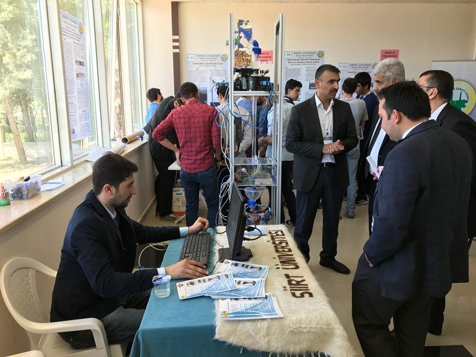
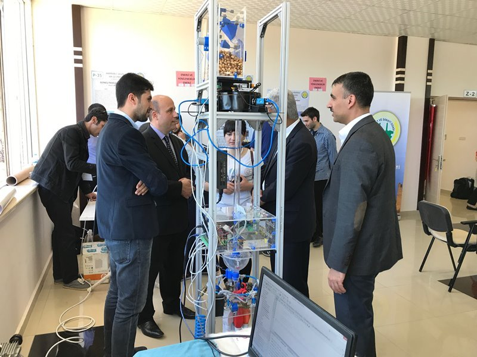
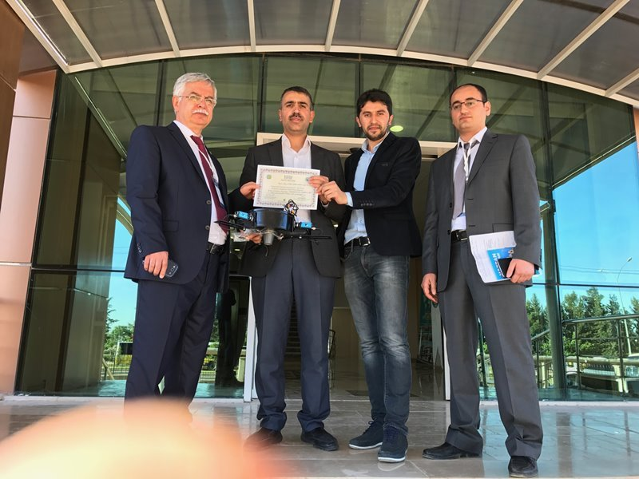

Ar-Ge Proje Pazarı’ndan Ödülle Döndü
Bilgisayar Destekli Fıstık Sınıflandırma Makinesi, Ar-Ge Proje Pazarı’ndan Ödülle Döndü
Harran Üniversitesinde “1.Harran Uluslararası Ar-Ge Proje Pazarı ” düzenlendi. Şanlıurfa Teknokent’de düzenlenen Harran I. Uluslararası AR-GE Proje Pazarına Üniversitemizi temsilen Mühendislik Fakültesinden Mühendislik Fakültesinden Yrd. Doç. Dr. Musa Ataş ve El-Cezeri Sibernetik ve Robotik Laboratuvarı ekibi katıldı. TÜBİTAK 1503 – Proje Pazarları Destekleme Programı desteğiyle bu yıl birincisi düzenlenen Harran Uluslararası AR-GE proje pazarında, Gıda ve Tarım Teknolojileri 26 proje, Enerji ve Yenilenebilir Enerji 9 proje, Çevre Teknolojileri 3 proje, Tıp ve Sağlık Uygulamaları 16 proje, Biyomedikal/Biyoteknoloji 4 proje, Nanoteknoloji ve Nutrasötikler 5 proje, Bilişim Teknolojileri 12 proje, Yeni Ürün Geliştirme 19 proje, Endüstriyel Ürün Tasarımı 11 proje, Endüstriyel Malzeme Üretimi ve Uygulamaları 23 proje, Elektrik ve Elektronik Teknolojileri 8 proje, Makine Teknolojileri 12 proje, Kimya/İlaç Teknolojileri 5 proje, Yapı Malzemeleri Üretimi ve Uygulamaları 7 proje, Tekstil Sanayi Teknolojileri 3 proje, Savunma Sanayi Teknolojileri 14 proje, diğer alanlar 16 proje olmak üzere 17 ana temadan 55 üniversite ve Milli Eğitimden ile 198 proje yer aldı. Proje Pazarında; akademisyenler ve araştırmacılar, küçük, orta ve büyük ölçekli işletmeler, Ar-Ge/İnovasyon çalışması olan proje sahipleri, yatırımcılar (projelere ortak olmak isteyen ve finansman sağlamak isteyen müteşebbisler), girişimciler ve öğrenciler projelerini sundu. Ankara ve Malatya İlinden Fen ve Anadolu Liseleri 3 adet, Şanlıurfa Özel Saraç İlgi Fen ve Anadolu Liselerinden 7 adet proje sunuldu. 1.Harran Uluslararası Ar-Ge Proje Pazarı Ödül töreninde, Üniversitemiz adına “Bilgisayar Destekli Fıstık Sınıflandırma Makinesi” adlı çalışma ile katılım sağlayan Yrd. Doç. Dr. Musa Ataş, Arş. Gör. Yahya Doğan, Arş. Gör. Yusuf Dilbilir mansiyon ödülüne layık görüldüler. Ödül töreni plaket töreniyle sona erdi.


